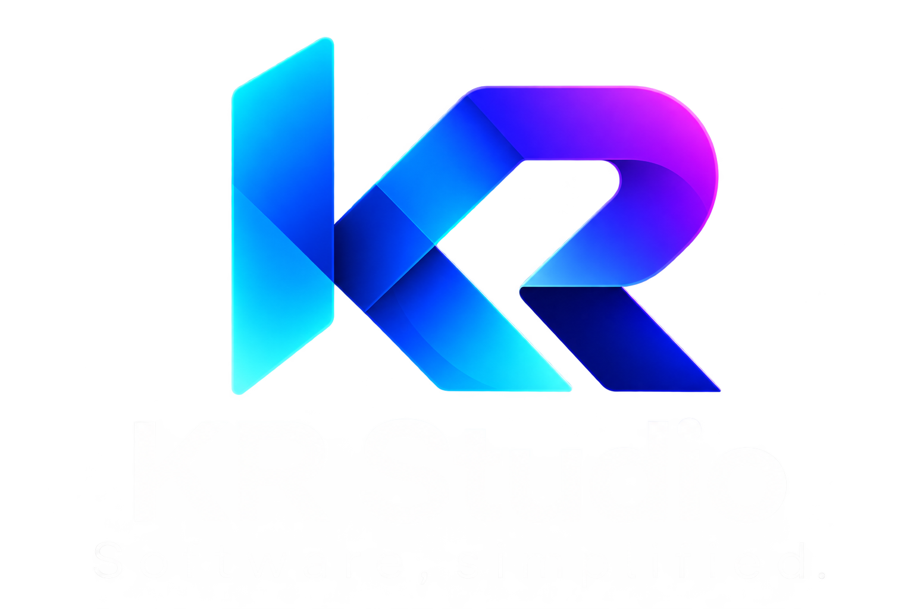

Admin workspace
Orbit
A workspace for Webex Contact Center administration—queues, skills, business hours, flows, and setup tools.

GitHubExplore the projects 05
A workspace for Webex Contact Center administration—queues, skills, business hours, flows, and setup tools.
Explore UCCX scripts, inspect variables, walk through call flows, and print a flow diagram.
A mobile portal for Webex Contact Center supervisors to manage and monitor their operation.
Queue visibility, consult speed dials, and incoming-call alerts for Webex Contact Center agents.
An installable mobile agent app with incoming-task push alerts and in-call controls.